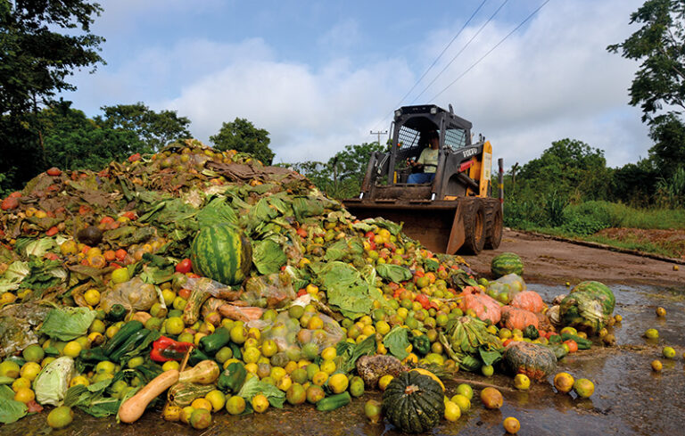
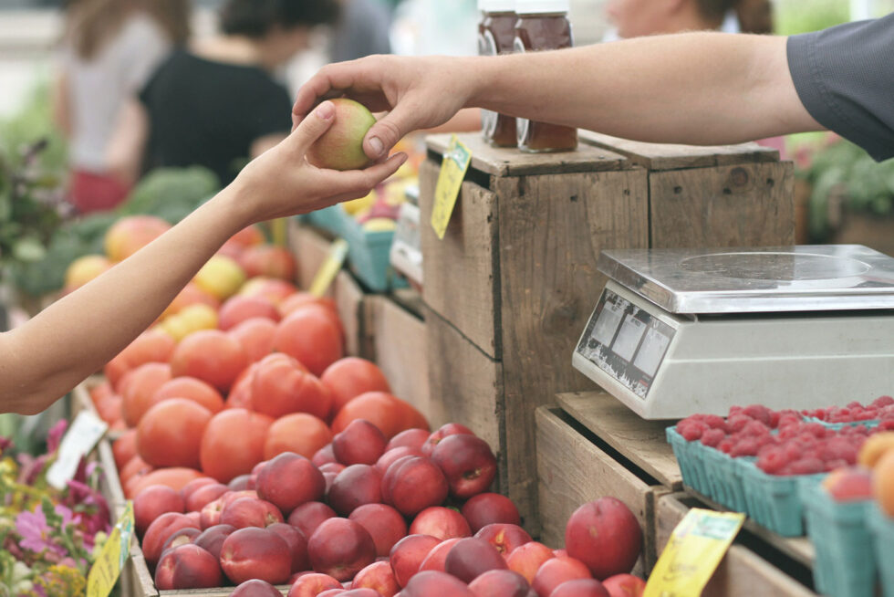

Consumo e produção responsáveis
Como consumir em harmonia com a natureza
Um objetivo da ODS
O "Consumo e produção responsáveis" é o 12º Objetivo de Desenvolvimento Sustentável. Sua intenção é promover a consicentização a respeito da necessidade de práticas sustentáveis sobre o consumo de materiais de produção e o consumo em geral.
https://www.ufmg.br/espacodoconhecimento/consumo-e-producao-responsaveis/
Como consumir / hábitos
A eficação desse objetivo exige a participação de todos. Para isso, devem ser implantados hábitos de consumo adequados, visando o estímulo da produção responsável.
https://institutoaurora.org/ods-12-consumo-e-producao-responsaveis/
Sites úteis
Sites para te ajudar a consumir de forma sustentável:
Site oficial das Nações Unidas no Brasil que apresenta as metas do objetivo.
Apresenta uma cartilha produzida pelo Centro Sebrae de Sustentabilidade para apresentar formas de tornar as empresas sustentáveis.
Cartilha para educação de crianças sobre a produção e o consumo sustentáveis.